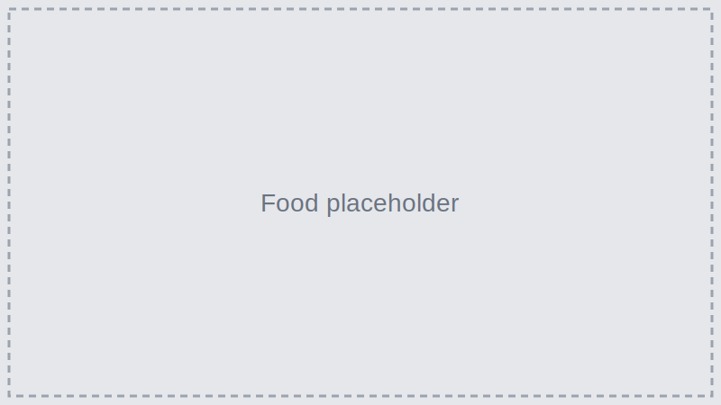

Food
Taniti offers a variety of dining options: five restaurants serve local fish and rice, three serve American-style meals, and two offer Pan‑Asian cuisine. Many venues are near Merriton Landing.
Local Fish & Rice
Fresh catch prepared in traditional styles.
Pan‑Asian & American
Diverse menus for all tastes.